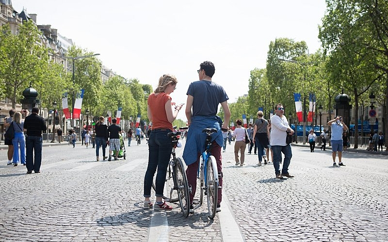
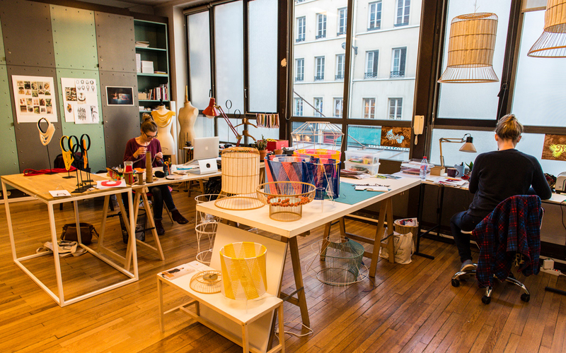

À la une
Les petits Parisiens dans les starting-block pour les Jeux de Paris 2024
Activités périscolaires, ateliers sportifs et artistiques, initiation à la nage et aux disciplines paralympiques... Paris profite des prochains Jeux pour...
Accès rapides
VOIR LA CARTE
Carte d'identité / Passeport

Travailler à paris

Stationnement résidentiel
À la une
Activités périscolaires, ateliers sportifs et artistiques, initiation à la nage et aux disciplines paralympiques... Paris profite des prochains Jeux pour...

Que faire à Paris cette semaine ?

12 expositions à ne pas manquer au printemps
05.
04
4h30 · Mouvement social du 6 avril. En raison de la grève du jeudi 6 avril, la circulation routière sera perturbée aux abords du parcours de la manifestation.
05.
04
14h00 · Piétonnisation. Profitez de l'avenue des Champs-Elysées et du centre de Paris (secteur Paris Centre) sans voiture ce dimanche 9 avril !
EN SAVOIR + 05.
04
11h25 · Soutien à la création. Designers, artisans et créateurs de mode, il est encore temps de déposer un dossier pour intégrer l'incubateur des Ateliers de Paris. Mise à disposition d'un an d'un espace de travail individuel ou partagé de 10 à 35 mètres carrés et accompagnement personnalisé avec les équipes du Bureau du design, de la mode et des métiers d'art. Jusqu'au 12 avril.
EN SAVOIR + 